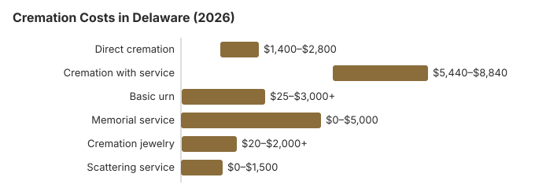

Cremation Costs in Delaware (2026)
About 55% of Delaware deaths end in cremation, 8.4 points under the 63.4% national rate NFDA projected for 2025, and the cost difference is wide: by our estimate a Delaware family saves about $6,600 compared with a traditional burial. Every cremation here needs a permit signed by the chief medical examiner. This page lays out the prices, that permit and the other rules, and the questions worth asking first.
Three Ways to Arrange a Delaware Cremation
Direct Cremation
- The lowest-cost option on a Delaware price list
- No visitation or service beforehand
- Transport goes directly to the crematory
- Ashes are returned to the family
- A memorial can be planned for later
Cremation with Service
- The funeral is held first, then the cremation
- A viewing can be arranged
- At a funeral home or a church
- Normally includes a plain urn
- Close to a traditional funeral for the family
Cremation Cost Breakdown
| Cremation item | Delaware estimate | Range |
|---|---|---|
| Direct cremation | $2,000 | $1,400 – $2,800 |
| Cremation with service | $6,800 | $5,440 – $8,840 |
| Basic urn | $50 – $300 | $25 – $3,000+ |
| Memorial service | $500 – $2,000 | $0 – $5,000 |
| Cremation jewelry | $50 – $500 | $20 – $2,000+ |
| Scattering service | $200 – $600 | $0 – $1,500 |
A note on these numbers: they are our Delaware estimates, built from a cost model rather than a survey of local providers, and they are not a quote or professional advice. See how we calculate them or read the full disclaimer.
State sources: 16 Del. Admin. Code 2000-2020; Delaware DSS indigent burial service.

Cremation and the Delaware Calendar
Winter can complicate a burial in Delaware, and cremation avoids that problem: the ashes can be buried or scattered at any time of year, so a memorial need not wait for the ground to thaw. Many families overlook this scheduling advantage, which comes on top of the roughly $6,600 Delaware cremation saves over a traditional burial.
Cremation Resources
- Funeral Consumers AllianceNonprofit advocacy: compare cremation providers
- Cremation Jewelry GuideMemorial keepsakes and remembrance options
- Cremation vs. Burial CostsSide-by-side cost comparison
- Pet Cremation CostsOptions and prices for pet cremation and memorials
- Final Expense InsuranceCoverage options to help pay for cremation costs
Compare Funeral Costs
- Average Funeral Cost in 2026National cost breakdown with real prices
- Cremation vs. Burial Cost ComparisonSide-by-side price comparison to help you decide
- Funeral Cost BreakdownEvery line item explained: know what you're paying for
- Cheapest Funeral OptionsLower-cost alternatives, with typical price ranges
- Direct Cremation: Most Affordable OptionNFDA 2023 median $2,645 with a family-supplied container (latest available)
- How to Compare Funeral PricesStep-by-step guide to getting the best price
Before You Sign for Cremation in Delaware
Check these points with any Delaware provider:
- Ask for the General Price List and read the direct cremation line first. It must say what is included; in Delaware that should mean transport, the cremation and a basic container for the ashes.
- Skip the casket. The FTC Funeral Rule (16 CFR 453.3(b)) requires a Delaware provider that offers direct cremation to accept an unfinished wood box or another alternative container.
- Before you sign, find out when the ashes will be ready, how they come back to you, and whether the price includes a certified death certificate.
Holding Down the Cost in Delaware
Two steps help keep a Delaware cremation affordable:
- Compare three price lists. Get written General Price Lists from at least three Delaware providers and set their direct cremation prices side by side.
- Ask how busy the crematory is. Around Wilmington, crematory capacity can push turnaround to 10 to 14 days at peak times, so ask about current waits.
Frequently Asked Questions
What does cremation cost in Delaware?
Our Delaware estimates run from $2,000 for a direct cremation to $6,800 when a full funeral service is held first.
What cremation options do Delaware providers offer?
Delaware providers usually sell three options. Direct cremation, about $2,000, has no viewing or service. Cremation with a later memorial is priced in between. A full funeral followed by cremation is about $6,800, or $4,800 above direct cremation.
Does Delaware have specific rules for cremation?
Delaware has no waiting clock in its funeral law, but it does insist on identification: unless the person was already identified, the remains cannot be cremated until the next of kin, the person authorized to make the arrangements, or the medical examiner has identified them. The body must also travel to the crematory in a rigid, leak-resistant container of combustible material, and metal or polyethylene does not qualify (24 Del. C. § 3121). For the exact Delaware citation, the funeral-director question and who takes complaints, see the cremation rules and help section lower on this page.
Where may ashes be scattered in Delaware?
Yes. The Division of Public Health's rule on the care of the dead, 16 Del. Admin. Code 4602 § 6.2, says that once cremated remains are delivered to the person designated to receive them, they may be carried anywhere in Delaware and disposed of in whatever way that person wishes. Landowner permission still applies, and scattering in the Atlantic falls under the federal three-nautical-mile rule with a report to EPA within 30 days.
The same rule deals with remains nobody collects. If no one arranges final disposition within 60 days of death, the funeral home may notify the Attorney General that the remains are abandoned, and after 12 months it may place them in a cemetery in a way that allows the family to retrieve them later (§§ 8.5 and 8.6).
How many Delaware families choose cremation?
Less common than nationally. We estimate Delaware's rate at about 55%, under the 63.4% national rate NFDA projected for 2025. Cost is usually the deciding factor: about $2,000 for direct cremation here against roughly $8,600 for a funeral service, before any cemetery charges. Each Delaware cremation needs a permit signed by the chief medical examiner (16 Del. C. § 3159).
How long does a Delaware cremation take?
Most Delaware cremations take 4 to 10 days from start to finish. Direct cremation ($2,000) is quickest because no viewing or service needs scheduling; with no fixed waiting period, the cremation permit is the main wait (16 Del. C. § 3159).
Can a Delaware family hold a funeral before cremation?
Yes. A Delaware funeral with the body present and cremation afterward costs about $6,800, with typical quotes from $5,440 to $8,840; direct cremation is about $2,000.
Delaware's timing rule matters for planning: a body kept more than 24 hours must be embalmed, refrigerated or sealed in a casket, and final disposition must happen within five days of death unless the state grants a permit (16 Del. Admin. Code 4602 § 10). The chief medical examiner must also sign the cremation permit, so ask the funeral home to request it before the service date.
More for Delaware
How Delaware's medical examiner permit works
Delaware's cremation permit carries the signature of the Chief Medical Examiner or an assistant or deputy, and that signature is the state's statement that there is no medical reason to stop the cremation. The funeral director brings the permit with a death certificate signed by the attending physician and the next of kin's signed authorization (16 Del. Admin. Code 4602, § 4.2; checked October 29, 2026).
- Held for investigation: the medical examiner may hold the body until questions about the cause or manner of death are settled.
- Cremating out of state: a person who died in Delaware still needs the Delaware medical examiner's signature even if the cremation happens in another state.
- Two copies: the crematory keeps one for inspection, and a second is filed with the death certificate at the Office of Vital Statistics.
Who oversees Delaware cremations, and where to find help
The Delaware Division of Professional Regulation (302-744-4500) licenses cremation providers and is the place to confirm a license or report a problem.
Delaware is not one of the nine states the Funeral Consumers Alliance lists as requiring a funeral director. In practice, though, a Delaware crematory will not proceed without the death certificate, the cremation permit and a signed authorization from the next of kin. There is no waiting period, but the permit must be signed by the chief medical examiner, with next-of-kin authorization (16 Del. C. § 3159).
Help with the cost
Delaware DSS pays very little toward a cremation: up to $100 for someone who was on TANF, General Assistance or Medicaid (16 Del. Admin. Code 2000-2020). When no one is able to pay at all, the DSS indigent burial service takes care of the disposition. (Source: 16 Del. Admin. Code 2000-2020; Delaware DSS indigent burial service.) Social Security's $255 lump sum goes only to an eligible spouse or child, and only if it is claimed within two years of the death.
An eligible veteran's ashes can be placed in a columbarium or an in-ground site at a veterans cemetery with no charge for the space. Delaware has two: the Delaware Veterans Memorial Cemetery in New Castle County (302-834-8046) and in Sussex County (302-934-5653). See cem.va.gov.
Next steps in Delaware
- Collect written direct cremation prices from at least two Delaware providers and compare what each includes.
- Ask when the chief medical examiner's permit is likely to be signed, so the memorial date is realistic.
- If no one can pay, contact the Division of Social Services about its indigent burial service before hiring a provider.
- Report a provider that misstates its prices to 302-744-4500.